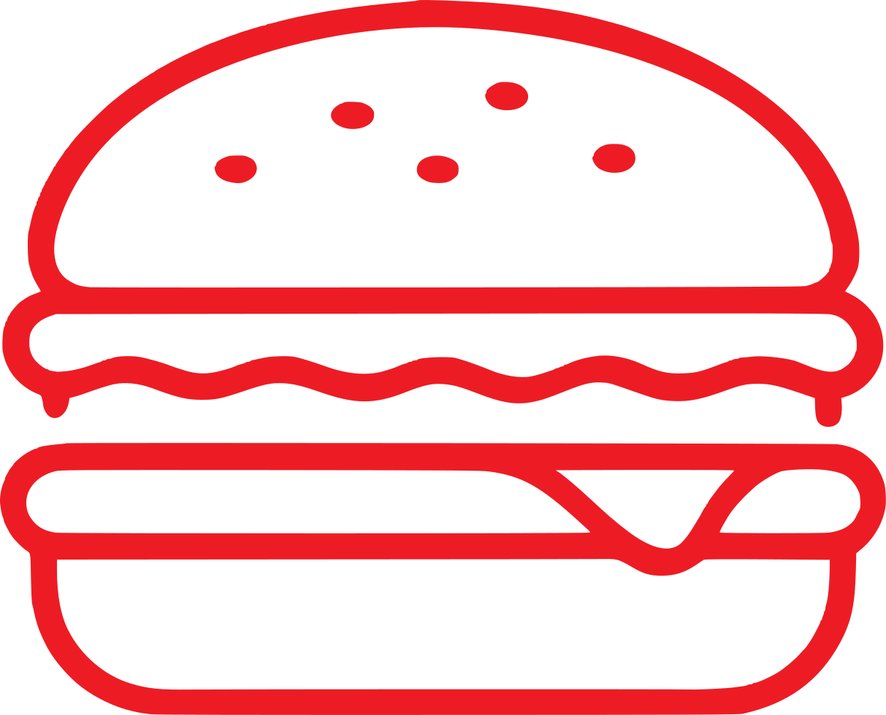
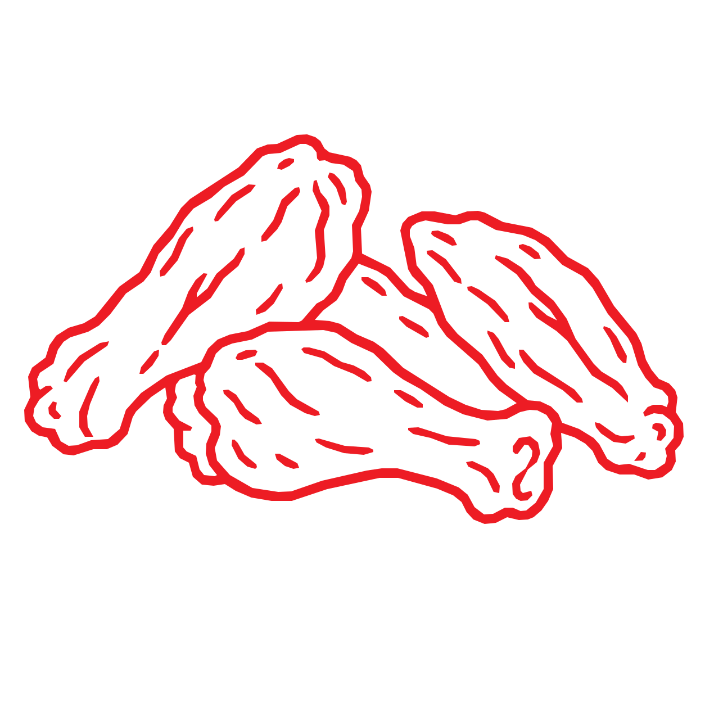
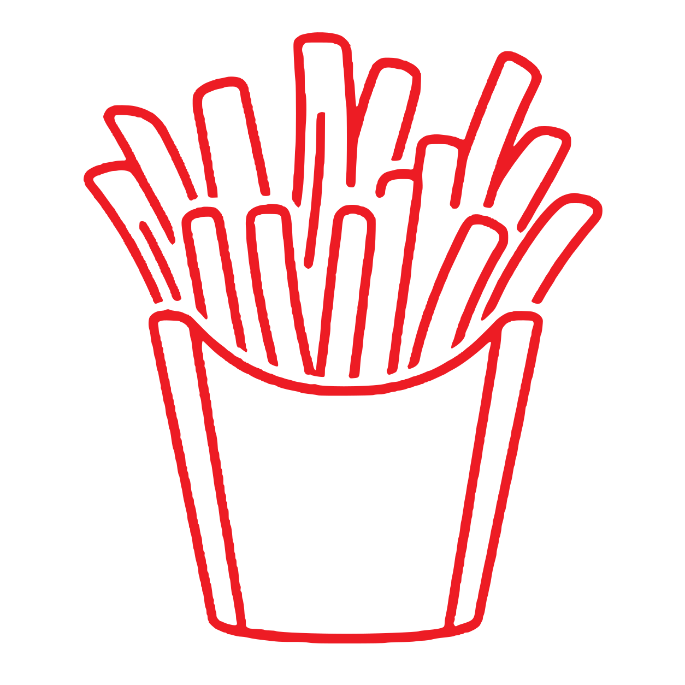

Smash Burgers
Crispy edges, juicy centers, stacked with flavor.

Smash burgers, bold wings, and crispy fries
made with real ingredients and big flavor.

Crispy edges, juicy centers, stacked with flavor.

Handcrafted, one-of-a-kind dry rubs and bold sauces. Flavor that’s unmistakably UFF-DA.

Hot, crispy fries served as the perfect side.
Local at heart. Serving Minnesota with pride.
UFF-DA started with a simple idea: take the food people already love and give them something they can’t get everywhere else. We’re always experimenting, creating our own flavor combinations, sauces, seasonings, and twists that bring something different to the table.
Our one-of-a-kind dry rubs are a big part of that—developed in-house by pushing beyond the usual seasonings and building bold, original flavor combinations you won’t find anywhere else. Some flavors are familiar, others are unexpected—but everything we make is built to stand on its own and taste unmistakably UFF-DA.
Our menu is built around hard-seared smash burgers with crispy edges and juicy centers, bold wings tossed in sauce or coated in our signature dry rubs, and hot, crispy fries made to go with just about everything.
For us, good food is about more than what’s on the menu. It’s about serving something you’re genuinely excited to hand across the counter—fresh, satisfying food made with the same attention we’d expect if we were the ones ordering it.
Every item is about taking something familiar and making it worth coming back for. Keep it straightforward, do it well, and serve seriously good food with flavors you won’t find just anywhere.
Locations and service times move. Follow UFF-DA on social for the current stop, specials, wing flavors, and what is coming off the griddle.